Arduino Output - Flow Lamp Program
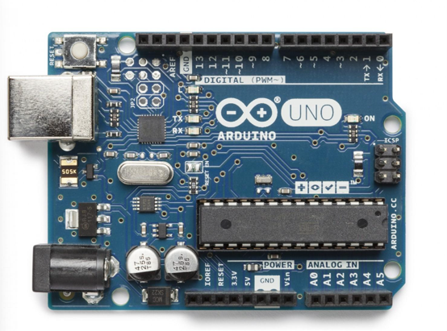
Arduino is an open-source electronics prototyping platform that consists of hardware (development boards), software (IDE), and a community, enabling absolute beginners to quickly build interactive electronics, robotics, and IoT projects.
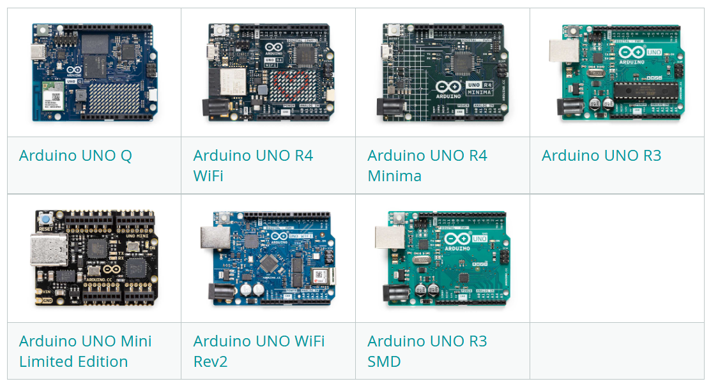
What is Open Source?
Open source means the source code of software/hardware is publicly available. It represents a philosophy and methodology where resources are shared openly for anyone to access, study, modify, and distribute.
Arduino UNO Q is a next-generation development board that combines the simplicity of traditional Arduino with powerful computing capabilities.
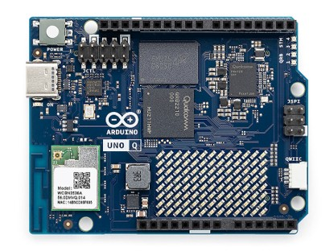
Dual-chip design, it works as both a microcontroller and a mini computer.
It shares the same pin layout as standard UNO, compatible with old shields and sensors.
One unified tool for Arduino sketches, Python scripts and AI model programming.
Select the Arduino board.
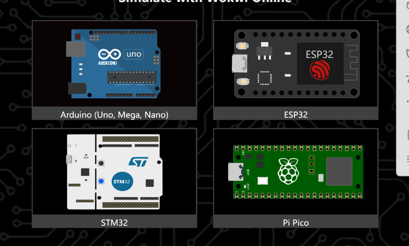
Click the plus icon to add components.
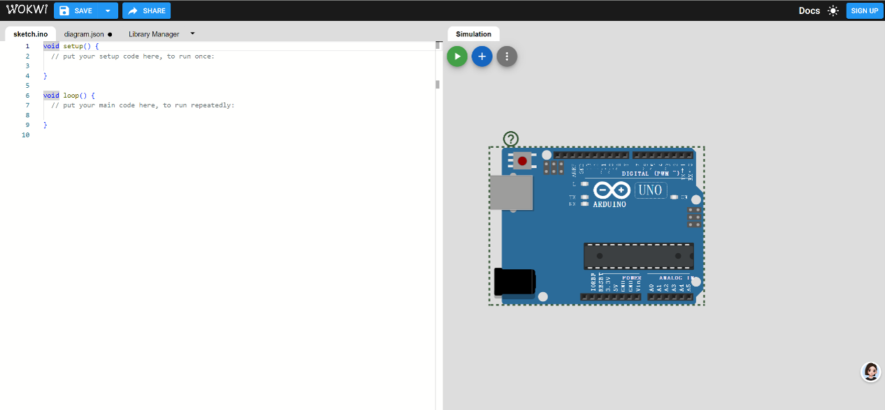
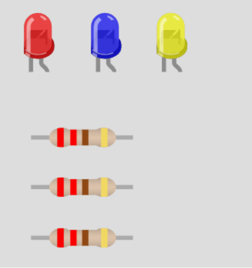
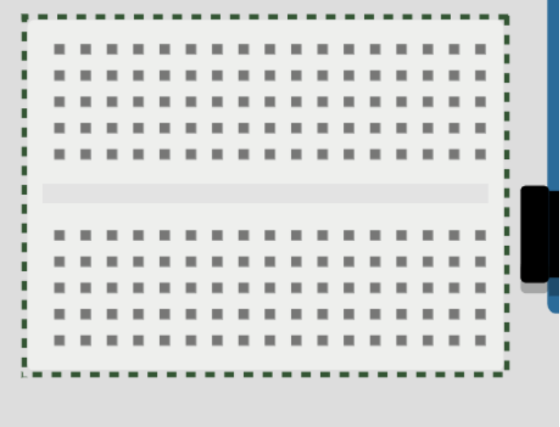
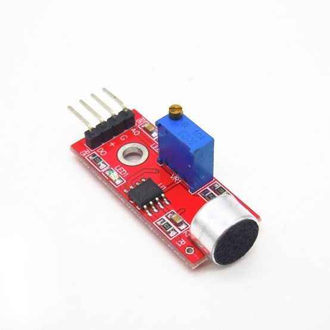
Complete circuit diagram showing the connection between Arduino, LEDs, resistors, and sound sensor.
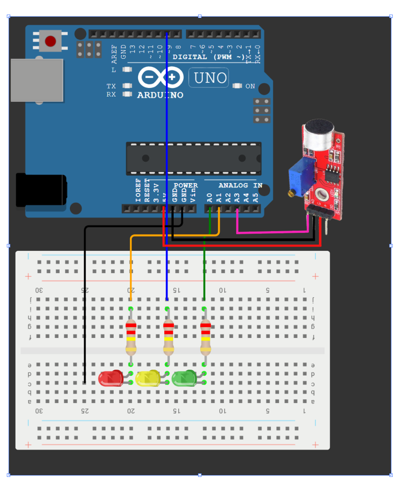
After completing the wiring, you can run the simulation to see the actual effect.
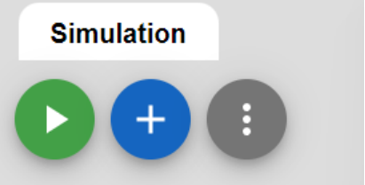
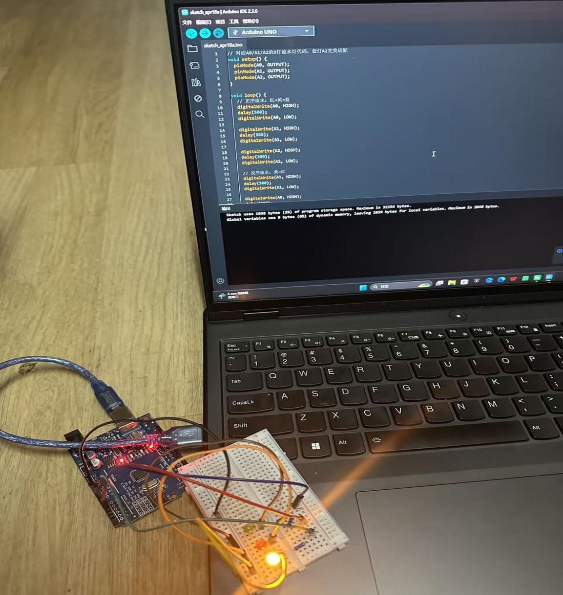
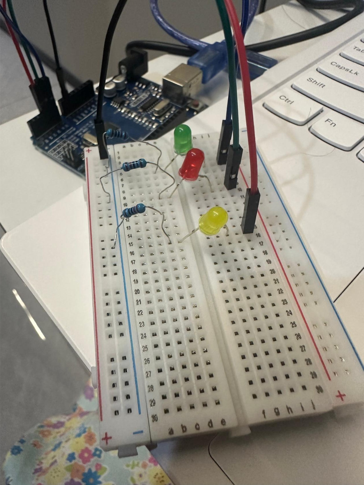
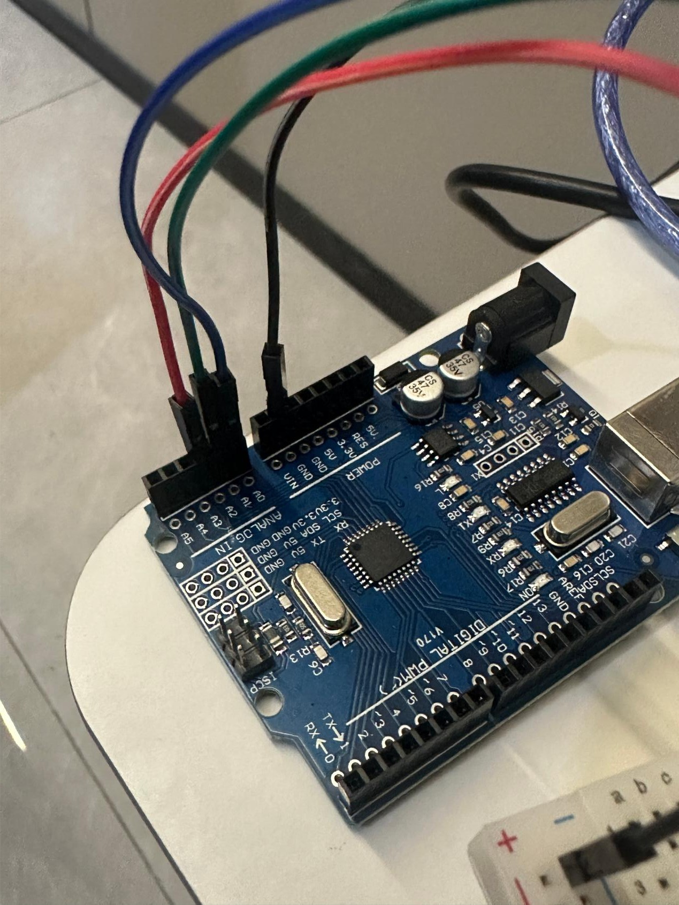
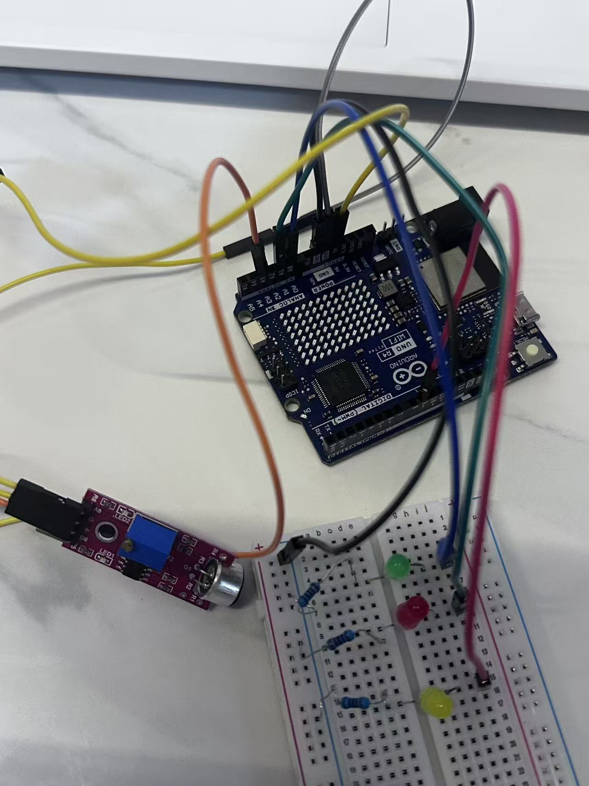
/*
* 声音控制三色灯 - 取峰值，绿灯范围可调
* 安静 (<60) : 流水灯 (绿->红->黄)
* 正常 (60~350) : 绿灯常亮
* 大声 (>350) : 黄灯呼吸灯
*/
const int PIN_LED_GREEN = A0;
const int PIN_LED_RED = A1;
const int PIN_LED_YELLOW = 9;
const int SOUND_SENSOR = A3;
// ========== 可调整的阈值 ==========
const int SILENT_THRESHOLD = 60; // 小于此值 → 安静模式
const int LOUD_THRESHOLD = 350; // 大于此值 → 大声模式 (调高此值可让绿灯范围更大)
// =================================
const unsigned long INTERVAL = 300; // 流水灯切换间隔(ms)
const unsigned long BREATHE_CYCLE = 2000; // 呼吸周期(ms)
const int NUM_SAMPLES = 10; // 每次采样次数
const int REQUIRED_STABLE = 3; // 连续稳定次数
unsigned long lastChange = 0;
int step = 0;
unsigned long breatheStart = 0;
int lastMode = -1;
int stableCount = 0;
// 读取峰值（最大值）
int readMaxVolume() {
int maxVal = 0;
for (int i = 0; i < NUM_SAMPLES; i++) {
int v = analogRead(SOUND_SENSOR);
if (v > maxVal) maxVal = v;
delay(3);
}
return maxVal;
}
void setup() {
pinMode(PIN_LED_GREEN, OUTPUT);
pinMode(PIN_LED_RED, OUTPUT);
pinMode(PIN_LED_YELLOW, OUTPUT);
Serial.begin(9600);
Serial.println("Ready - Peak detection, LOUD_THRESHOLD=350");
digitalWrite(PIN_LED_GREEN, LOW);
digitalWrite(PIN_LED_RED, LOW);
analogWrite(PIN_LED_YELLOW, 0);
}
void loop() {
int volume = readMaxVolume();
Serial.println(volume);
int mode;
if (volume < SILENT_THRESHOLD)
mode = 0;
else if (volume < LOUD_THRESHOLD)
mode = 1;
else
mode = 2;
if (mode == lastMode) {
stableCount++;
} else {
stableCount = 0;
lastMode = mode;
}
if (stableCount >= REQUIRED_STABLE) {
// 熄灭所有灯
digitalWrite(PIN_LED_GREEN, LOW);
digitalWrite(PIN_LED_RED, LOW);
analogWrite(PIN_LED_YELLOW, 0);
if (mode == 0) {
// 安静模式：流水灯
unsigned long now = millis();
if (now - lastChange >= INTERVAL) {
lastChange = now;
step = (step + 1) % 3;
if (step == 0) digitalWrite(PIN_LED_GREEN, HIGH);
else if (step == 1) digitalWrite(PIN_LED_RED, HIGH);
else analogWrite(PIN_LED_YELLOW, 255);
}
}
else if (mode == 1) {
// 正常模式：绿灯常亮
digitalWrite(PIN_LED_GREEN, HIGH);
}
else {
// 大声模式：黄灯呼吸灯
if (breatheStart == 0) breatheStart = millis();
unsigned long elapsed = millis() - breatheStart;
float t = (float)(elapsed % BREATHE_CYCLE) / BREATHE_CYCLE;
int brightness;
if (t < 0.5) {
brightness = (int)(t * 2 * 255);
} else {
brightness = (int)((1 - t) * 2 * 255);
}
analogWrite(PIN_LED_YELLOW, brightness);
}
}
delay(30);
}Click on any video to view it in full screen. Double-click to enlarge.